关于
《蛋仔派对》全国总决赛是蛋仔派对赛事体系中的最高级别年度赛事，全年参与人次超过 1,300 万，抖音话题浏览量超 11 亿。
我们为这个系列赛事建立可延续的视觉系统：从主 KV、赛事 VI 手册，到宣发、直播与节目包装、大屏和周边。在轻松派对游戏与硬核电竞赛事之间取得平衡，打造令人难忘的线上线下电竞盛宴。
全网直播峰值突破 2800 万，线下门票 1 分钟售罄，吸引超 3.2 万观众入场。

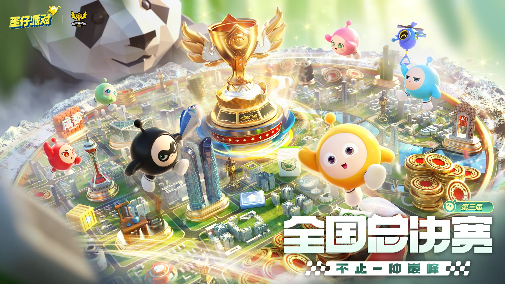


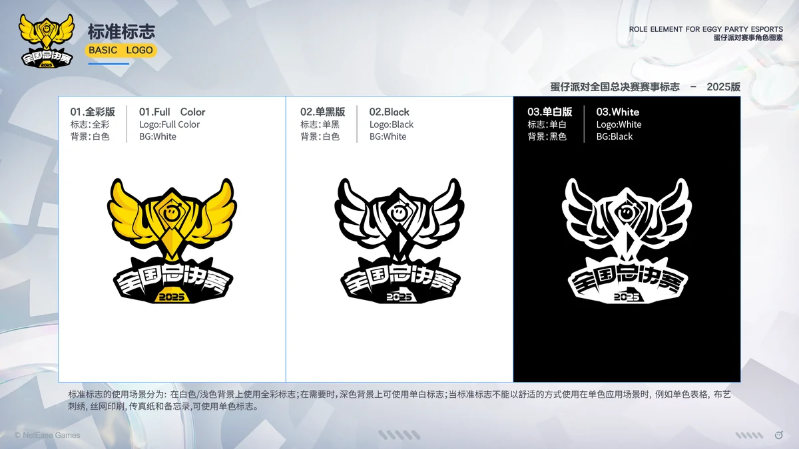
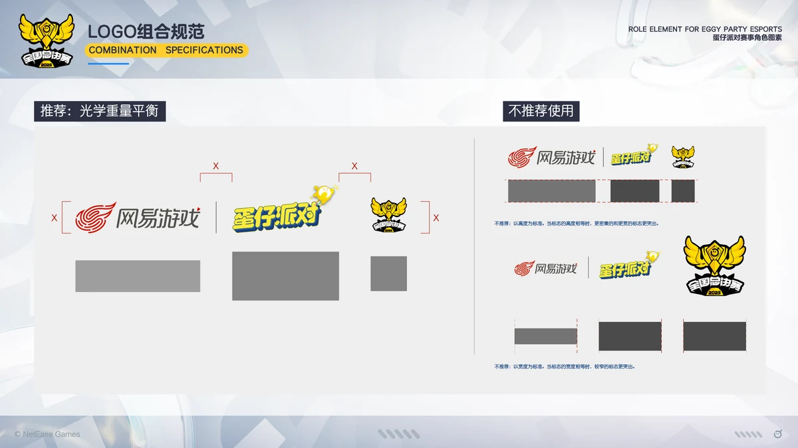


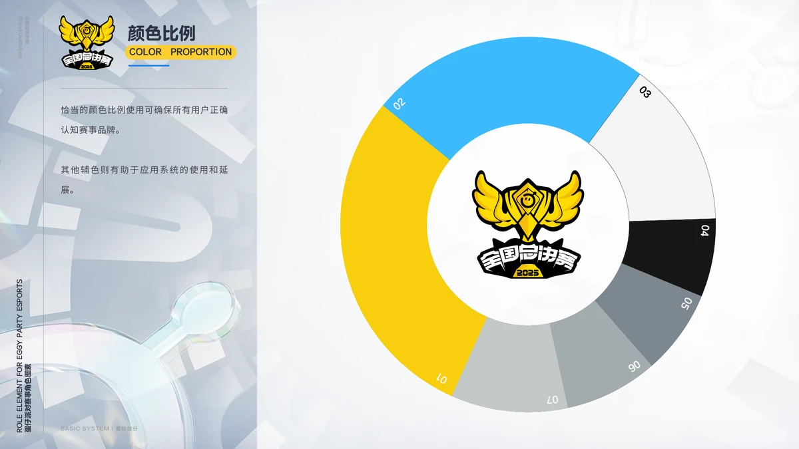
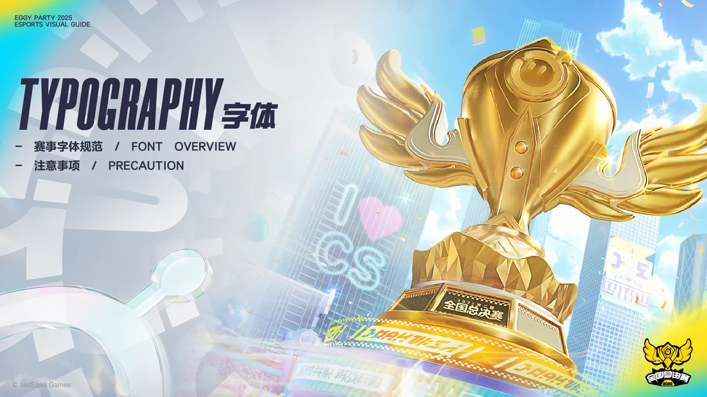
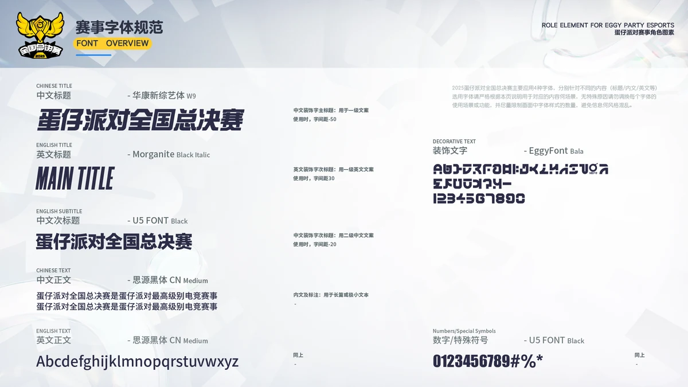
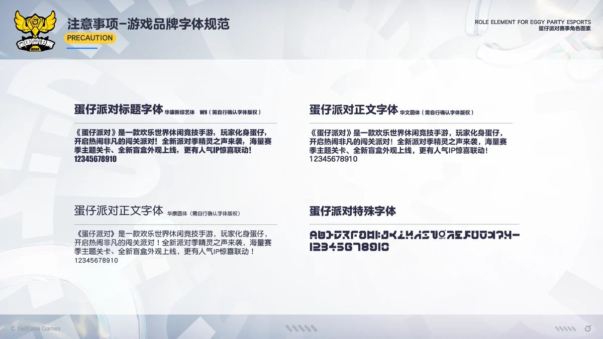


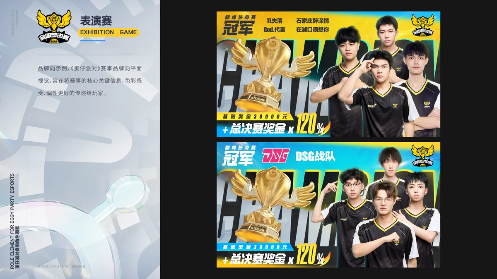


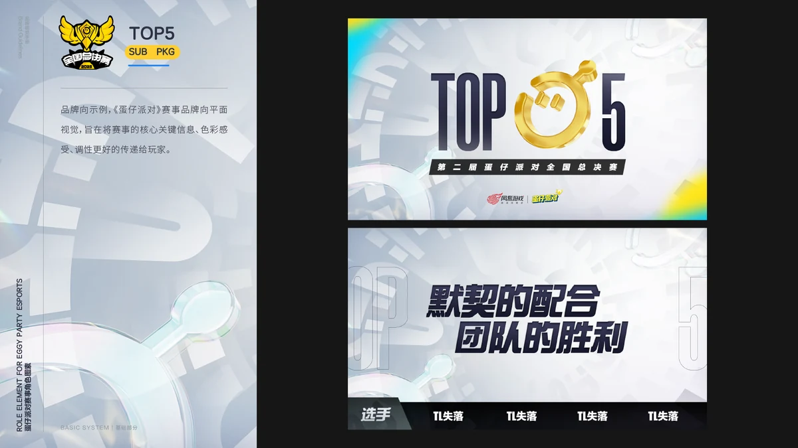

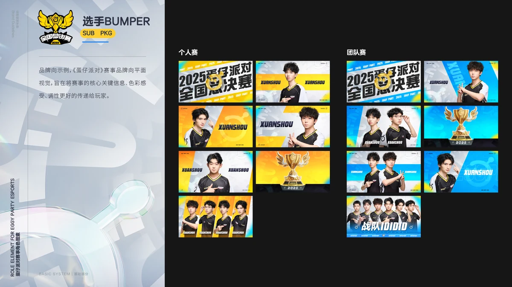

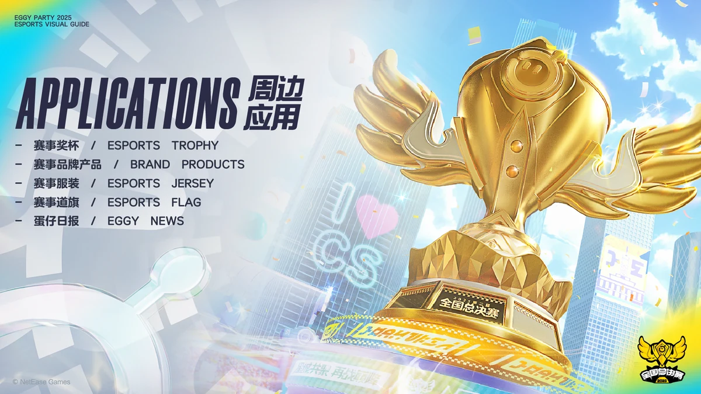


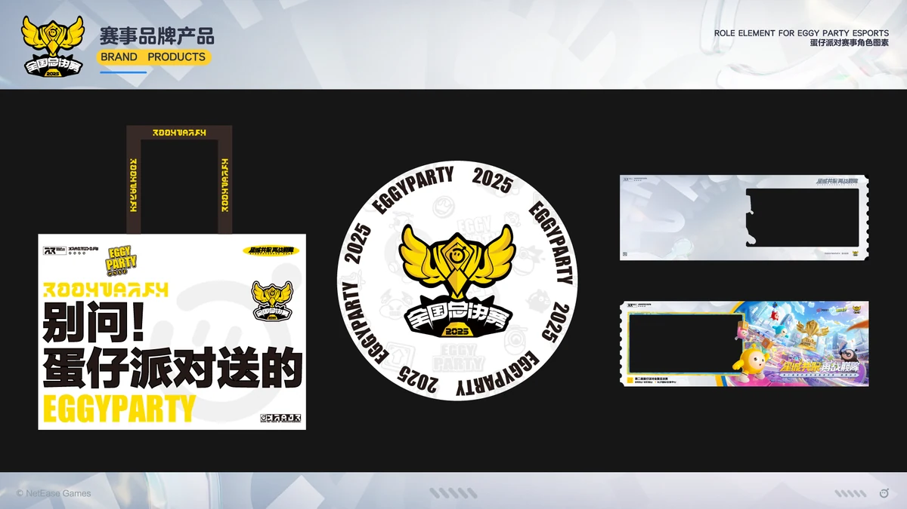
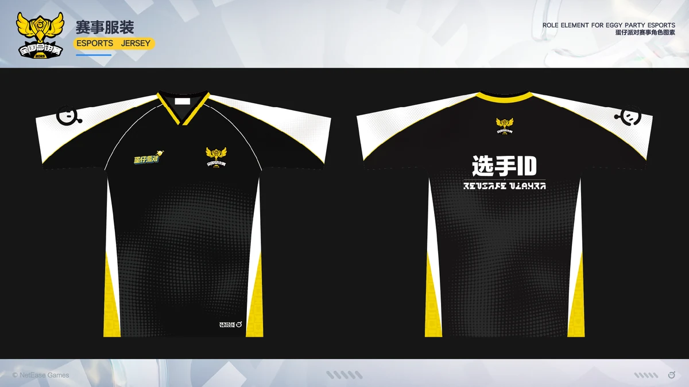
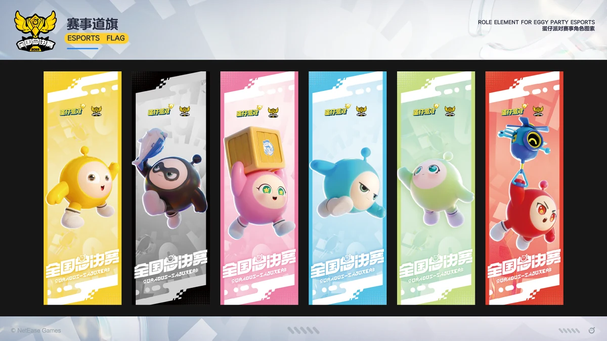

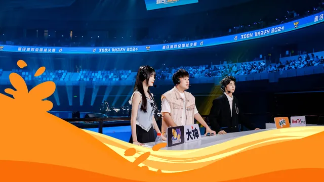

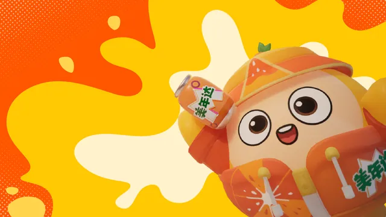


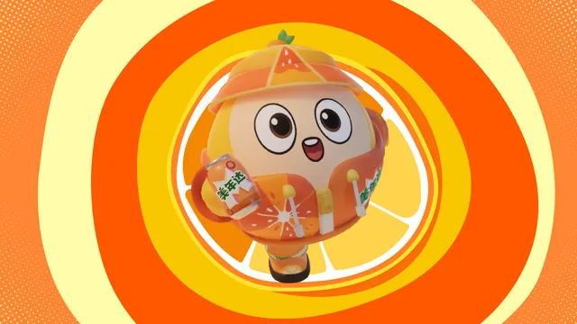
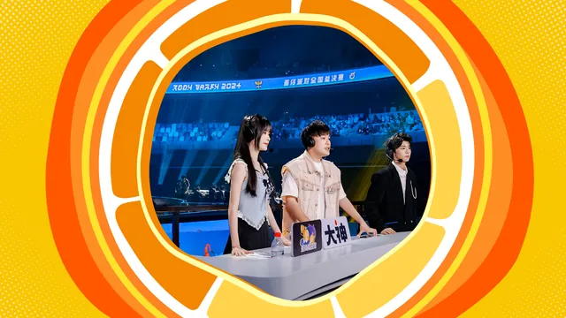